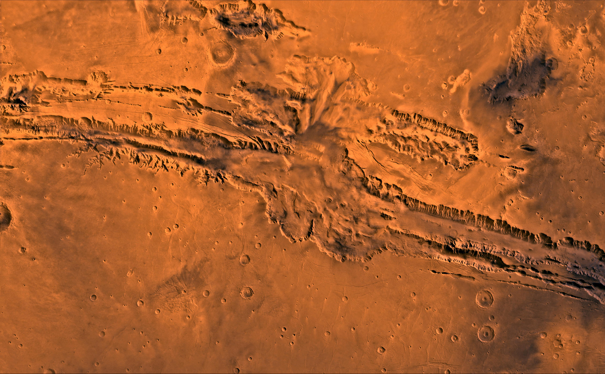
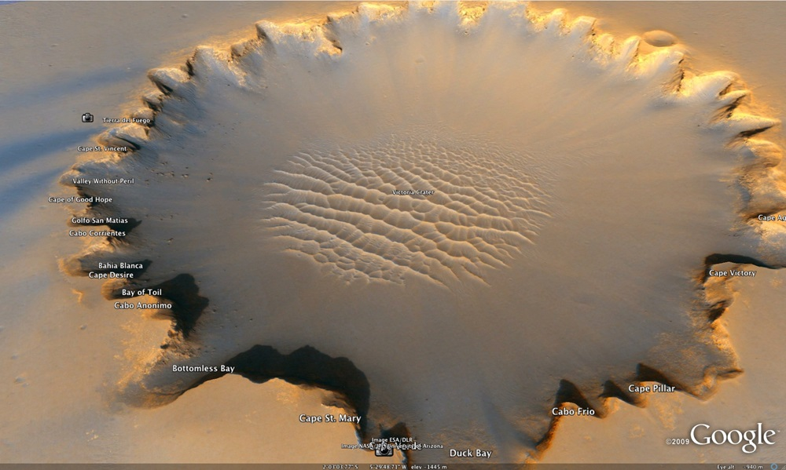

Monte Olimpo
Es la mayor montaña y volcán conocido del sistema solar. Se encuentra en el hemisferio occidental del planeta Marte, en las coordenadas aproximadas de 18º N, 133° W.

Valles Marineris
Valles Marineris (del latín Valles Marineris, que significa Valle del Marinero) es el nombre de un gigantesco sistema de cañones que recorre el ecuador del planeta Marte justo al este de la región de Tharsis. Su nombre es un homenaje a la sonda de la NASA Mariner 9, que descubrió este importante rasgo de la superficie marciana en su vuelo orbital de 1971-1972. Sus dimensiones son colosales siendo de 4500 km de longitud, 200 km de anchura y 11 km de profundidad máxima, llegando a cubrir un cuarto de la circunferencia ecuatorial del planeta. Es, en comparación, diez veces más largo, siete veces más ancho y siete veces más profundo que el Gran Cañón de Arizona, y abarca un poco más de lo que es el territorio de los Estados Unidos de costa a costa lo cual lo convierte en la hendidura más grande de todas las conocidas en el sistema solar.
Crater Victoria
Victoria es el nombre de un pequeño cráter de impacto en el planeta Marte situado a 2,05° Sur y 5,5° Oeste. El impacto causó un abertura de 750 metros de diámetro en la superficie del Meridiani Planum.
